Chase DeLauter

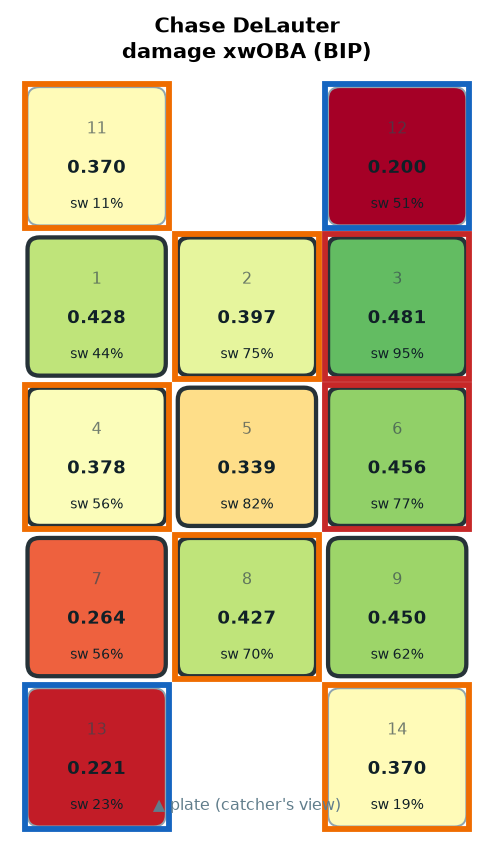
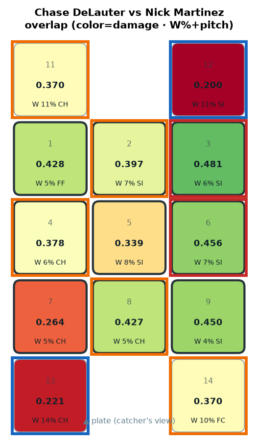
HOT MID-AWAY ← mainly SI (W 7.3%) · COLD OUT-DN-3B ← mainly CH (W 14.0%) · HOT HI-AWAY (1B) ← mainly SI (W 6.0%) · COLD OUT-UP-1B ← mainly SI (W 11.2%)
HOT MID-AWAY · COLD OUT-DN-3B · HOT HI-AWAY (1B) · COLD OUT-UP-1B
Nathaniel Lowe

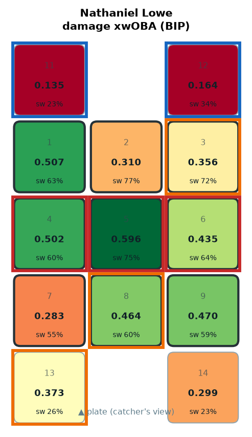
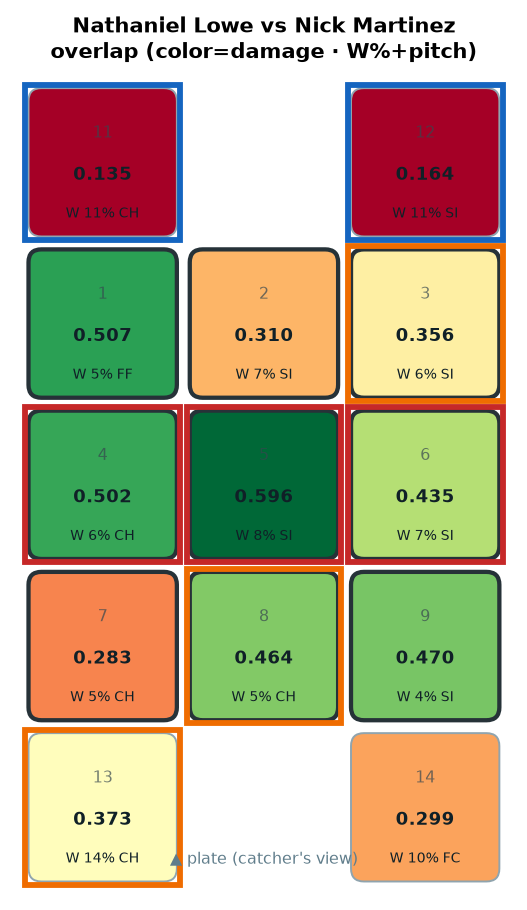
HOT HEART ← mainly SI (W 8.2%) · HOT MID-IN ← mainly CH (W 6.4%) · HOT MID-AWAY ← mainly SI (W 7.3%) · COLD OUT-UP-1B ← mainly SI (W 11.2%)
HOT HEART · HOT MID-IN · HOT MID-AWAY · COLD OUT-UP-1B
Travis Bazzana

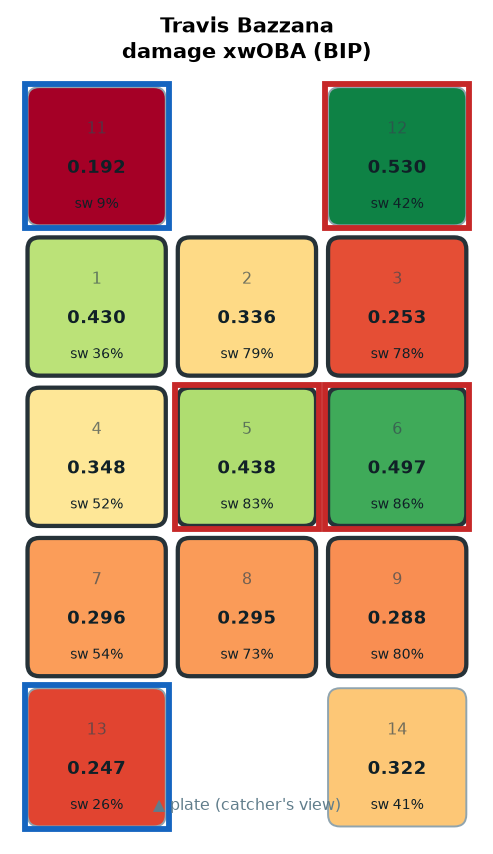
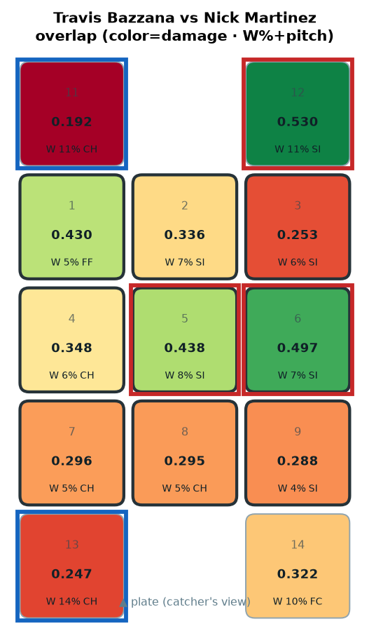
HOT MID-AWAY ← mainly SI (W 7.3%) · HOT HEART ← mainly SI (W 8.2%) · COLD OUT-DN-3B ← mainly CH (W 14.0%) · COLD OUT-UP-3B ← mainly CH (W 10.8%)
HOT MID-AWAY · HOT HEART · COLD OUT-DN-3B · COLD OUT-UP-3B
Jo Adell
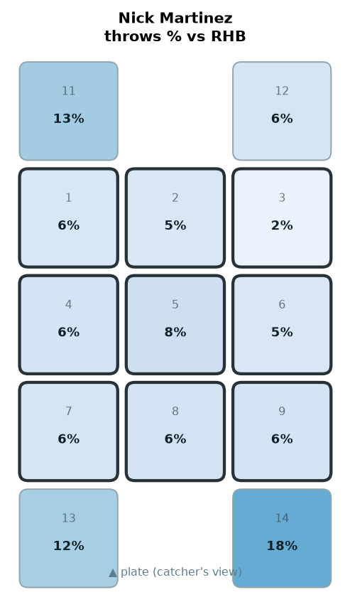
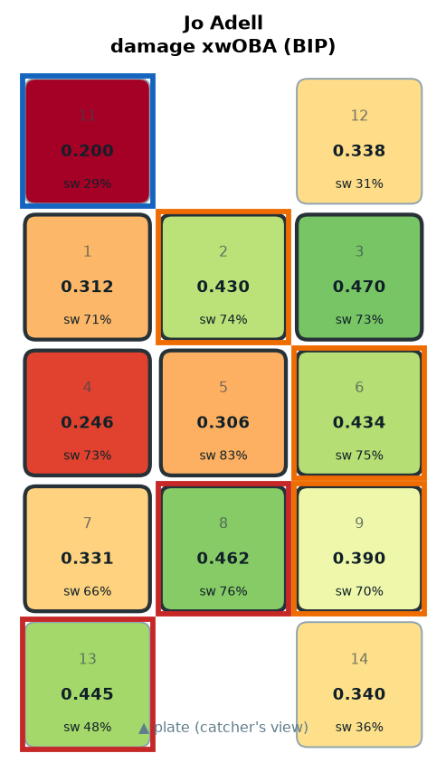
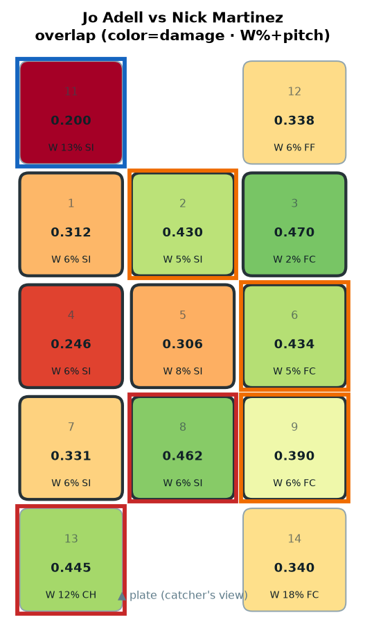
HOT OUT-DN-3B ← mainly CH (W 12.1%) · HOT LO-MID ← mainly SI (W 6.5%) · COLD OUT-UP-3B ← mainly SI (W 12.7%)
HOT OUT-DN-3B · HOT LO-MID · COLD OUT-UP-3B
Steven Kwan

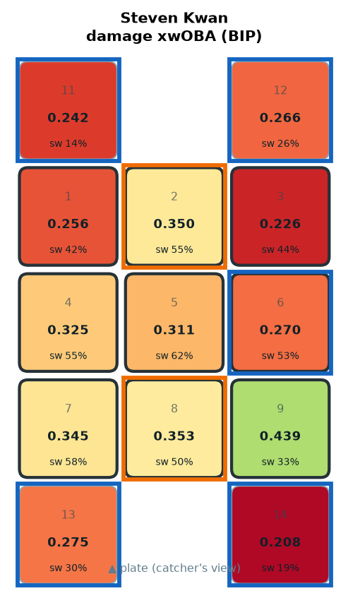
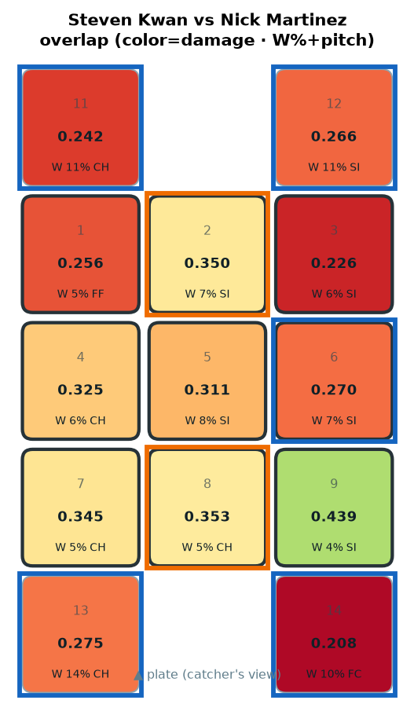
COLD OUT-DN-3B ← mainly CH (W 14.0%) · COLD OUT-UP-1B ← mainly SI (W 11.2%) · COLD OUT-UP-3B ← mainly CH (W 10.8%) · COLD OUT-DN-1B ← mainly FC (W 10.2%)
COLD OUT-DN-3B · COLD OUT-UP-1B · COLD OUT-UP-3B · COLD OUT-DN-1B
Brayan Rocchio
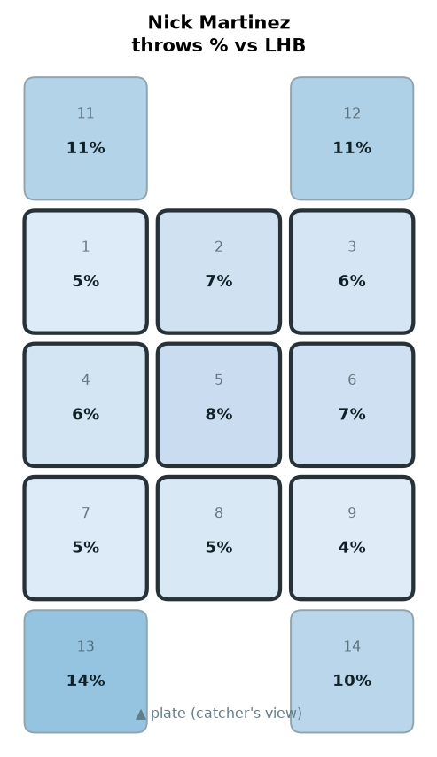
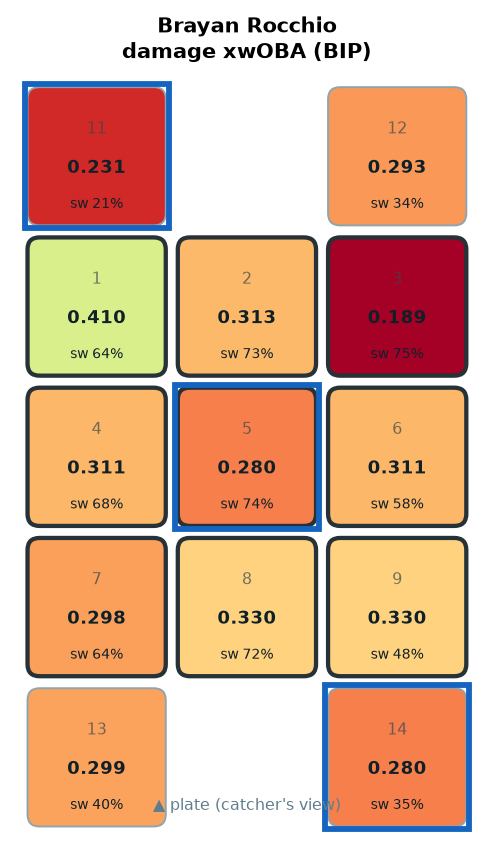
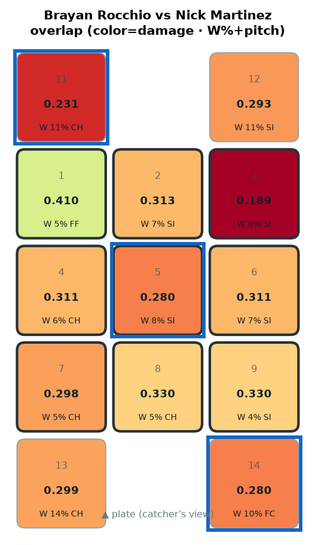
COLD OUT-DN-1B ← mainly FC (W 10.2%) · COLD OUT-UP-3B ← mainly CH (W 10.8%) · COLD HEART ← mainly SI (W 8.2%)
COLD OUT-DN-1B · COLD OUT-UP-3B · COLD HEART
Patrick Bailey

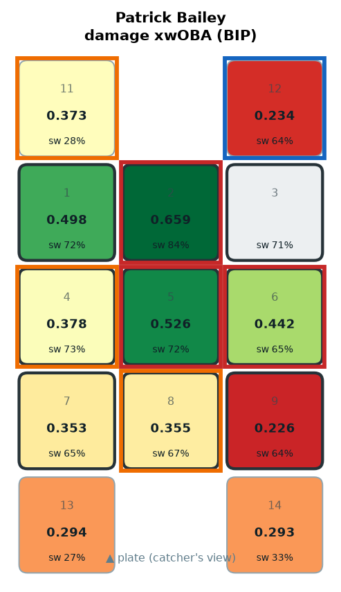
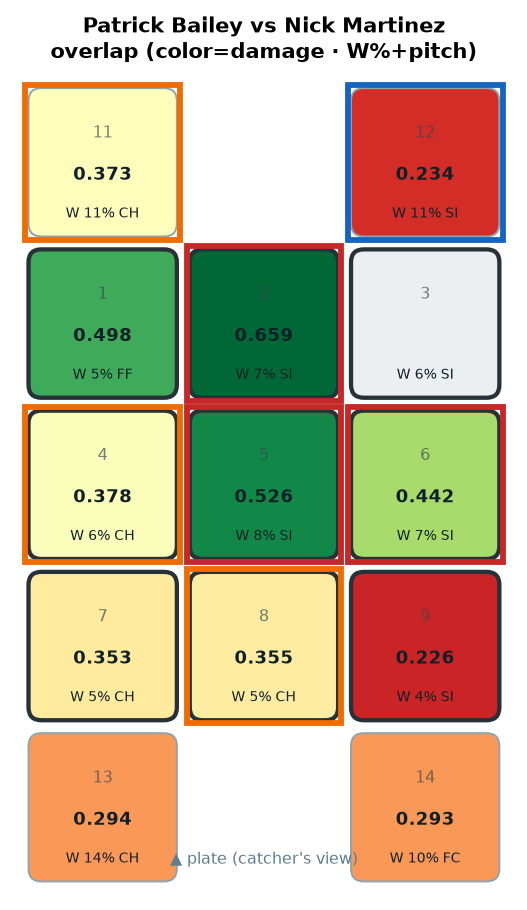
HOT HI-MID ← mainly SI (W 7.1%) · HOT HEART ← mainly SI (W 8.2%) · HOT MID-AWAY ← mainly SI (W 7.3%) · COLD OUT-UP-1B ← mainly SI (W 11.2%)
HOT HI-MID · HOT HEART · HOT MID-AWAY · COLD OUT-UP-1B
Petey Halpin

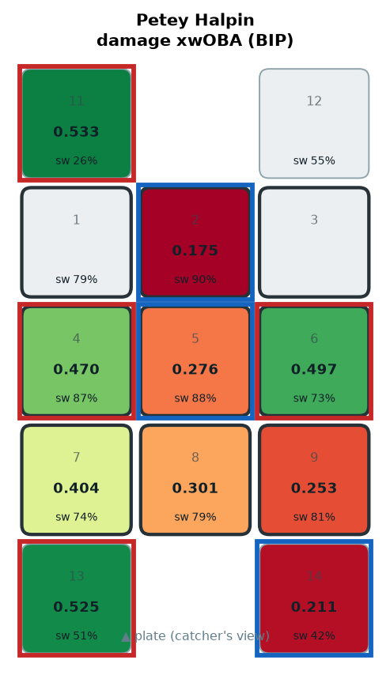
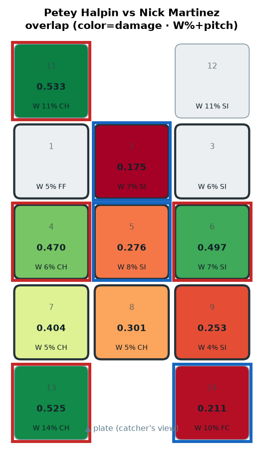
HOT OUT-DN-3B ← mainly CH (W 14.0%) · HOT OUT-UP-3B ← mainly CH (W 10.8%) · HOT MID-AWAY ← mainly SI (W 7.3%) · HOT MID-IN ← mainly CH (W 6.4%)
HOT OUT-DN-3B · HOT OUT-UP-3B · HOT MID-AWAY · HOT MID-IN
José Ramírez

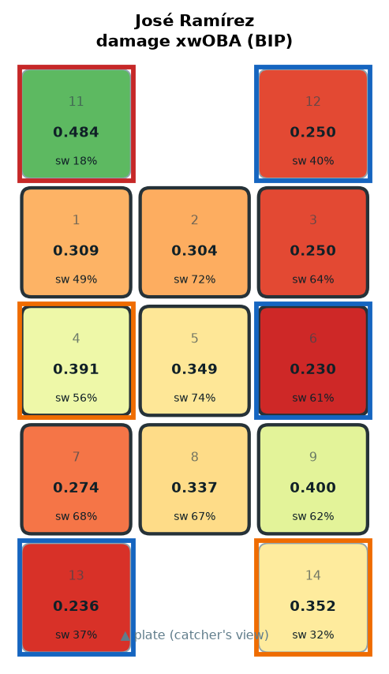
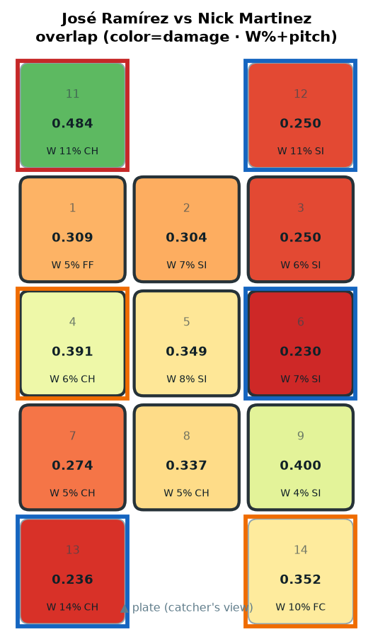
HOT OUT-UP-3B ← mainly CH (W 10.8%) · COLD OUT-DN-3B ← mainly CH (W 14.0%) · COLD OUT-UP-1B ← mainly SI (W 11.2%) · COLD MID-AWAY ← mainly SI (W 7.3%)
HOT OUT-UP-3B · COLD OUT-DN-3B · COLD OUT-UP-1B · COLD MID-AWAY